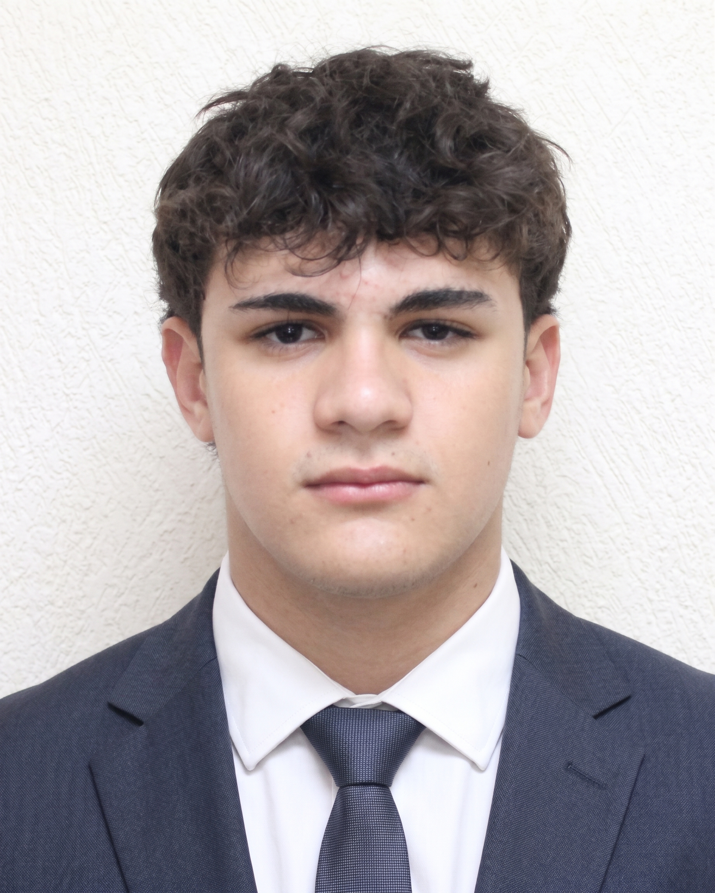
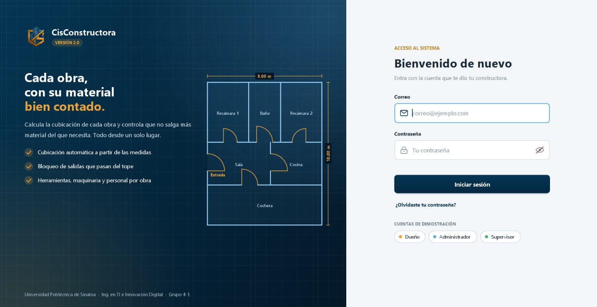
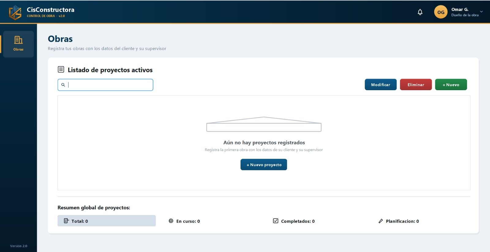
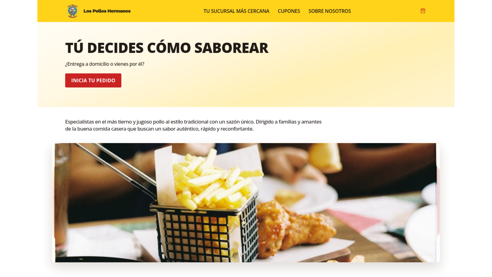
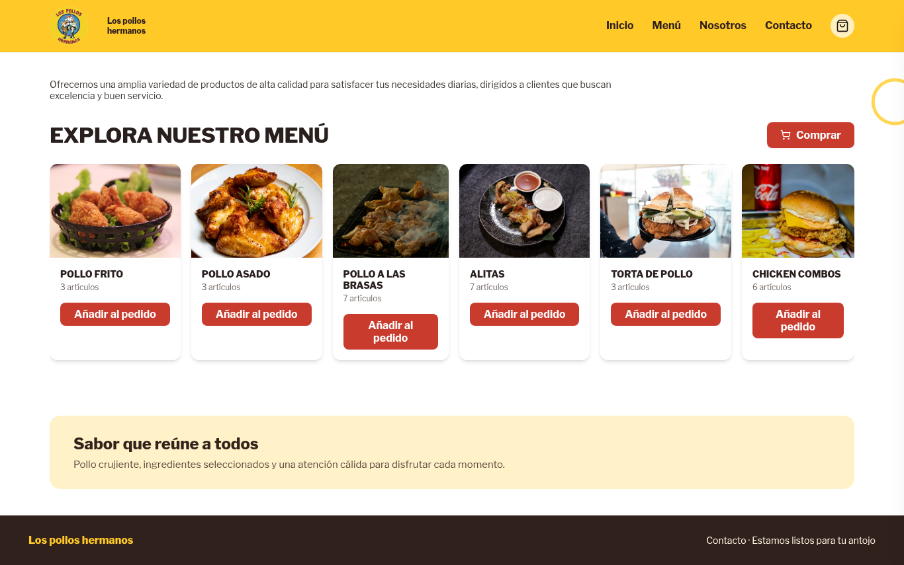
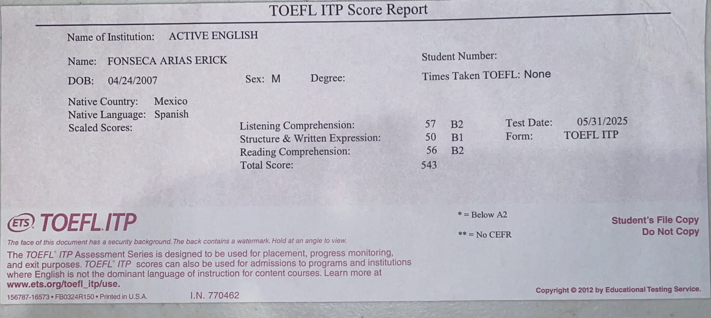

Estudiante de Ingeniería en TI · UPSIN
Erick Julián Fonseca Arias
Ingeniería en Tecnologías de la Información e Innovación Digital
Desarrollo web front-end y bases de datos. Soluciones escalables.
Sobre mí
Quién soy y qué estudio
Hola, soy Erick
Soy estudiante de Ingeniería en Tecnologías de la Información e Innovación Digital en la Universidad Politécnica de Sinaloa (UPSIN). Me gusta crear soluciones digitales para resolver problemas reales, sobre todo con bases de datos y desarrollo front-end.
- Universidad
- Universidad Politécnica de Sinaloa (UPSIN)
- Cuatrimestre
- Cuarto
- Generación
- 2025-2028

Habilidades
Lenguajes, herramientas e idiomas que manejo
Herramientas
Idiomas
Proyectos
Trabajos que he desarrollado en la carrera
CisConstructora
Sistema para constructoras que calcula los materiales de cada obra y controla el inventario, las herramientas y la maquinaria.


Problema
En una obra es difícil saber si el material que se usa de verdad coincide con el que se debería usar.
Solución
El sistema calcula cuánto material necesita la obra y limita las salidas del inventario a esa cantidad.
Los Pollos Hermanos
Sitio web e-commerce de un restaurante de pollos, programado en HTML y CSS.


Certificaciones
Constancias que respaldan mis conocimientos
2026
TOEFL ITP · Nivel B2
Inglés

Contacto
¿Tienes una propuesta, una duda o un proyecto en mente? Escríbeme por correo.